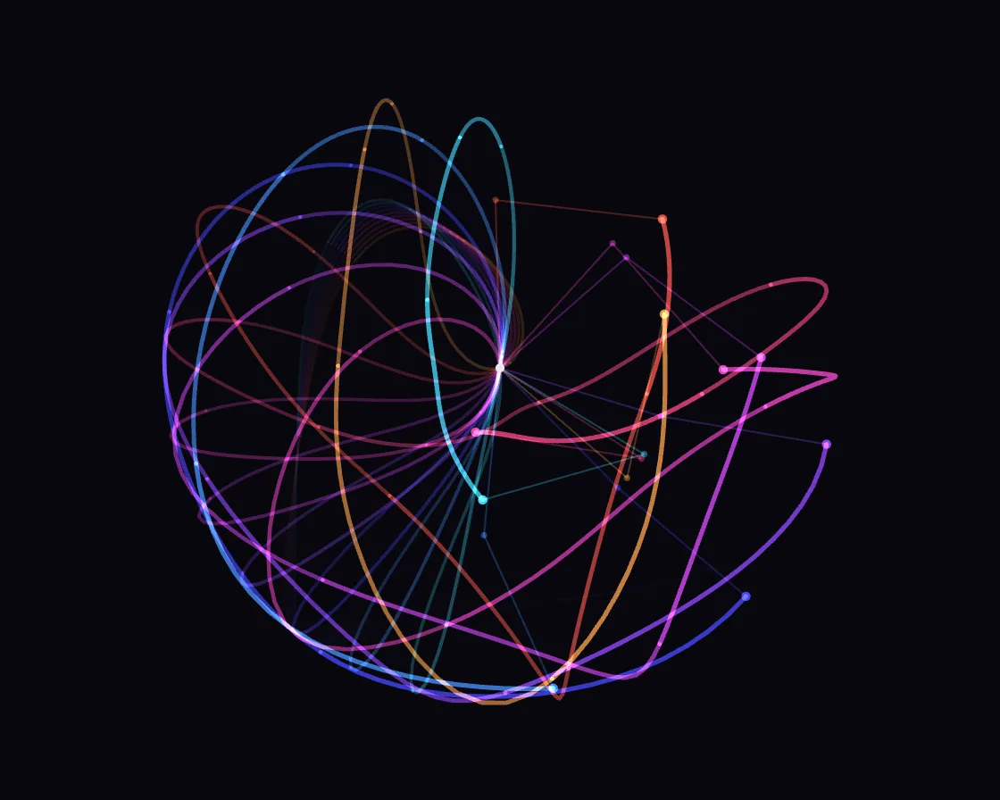

Double pendulums
Double pendulums is a Canvas effect: chaos: pendulums a fraction of a milliradian apart diverge completely. One plain JavaScript file with no dependencies; add it with npx motion-library add double-pendulum.

Open it live, tune it and copy the code
What is Double pendulums?
Nine double pendulums swing as one white trace, then suddenly fan out into colours that never agree again. The pointer holds the pivot, so the pendulums swing from your hand.
How does Double pendulums work?
They start a fraction of a milliradian apart and run Runge–Kutta 4 on the full equations; chaos doubles the gap each swing. Additive trails make the shared trace white.
How do I add Double pendulums to my website?
- In your project folder, run
npx motion-library add double-pendulum. It writesanimations/double-pendulum.js. Needs Node 18 or newer. - Import it and call it with a container element that has a size:
import fx from './animations/double-pendulum.js'; const stop = fx(document.querySelector('#hero')); - Call
stop()to clean up, for example when a component unmounts.
Every setting below is also a flag, so you can install it already tuned: npx motion-library add double-pendulum --count 16.
What settings can I tweak?
| Setting | Flag | Default | Range | Step |
|---|---|---|---|---|
| Pendulums | --count | 9 | 2 to 16 | 1 |
| Start spread (mrad) | --spread | 0.2 | 0.01 to 5 | 0.01 |
| Speed | --speed | 1 | 0.1 to 3 | 0.05 |
Specifications
- Renderer
- Canvas 2D
- Category
- Simulation
- Dependencies
- None
- File size
- 7.4 KB, unminified
- Interactive
- Yes: it responds to the pointer
- Reduced motion
- Respects prefers-reduced-motion
- Licence
- MIT-0: use it anywhere, no credit needed
Source code
// Double pendulums and chaos. Several double pendulums start a fraction of a milliradian apart and are integrated
// exactly alike (Runge–Kutta 4 on the full equations of motion). For a few swings they move as one white trace; then
// the tiny difference doubles and doubles again, and they fan out into separate colours that never agree again.
// Each tip leaves a fading trail; additive blending shows where the traces still overlap.
// The pointer holds the pivot: move it and the pendulums swing from your hand (its acceleration tilts their gravity).
const PARAMS = { count: 9, spread: 0.2, speed: 1 };
export default function (stage) {
const canvas = document.createElement('canvas');
canvas.style.cssText = 'position:absolute;inset:0;width:100%;height:100%;display:block';
stage.append(canvas);
const ctx = canvas.getContext('2d');
const reduce = matchMedia('(prefers-reduced-motion: reduce)').matches;
let W = 0, H = 0, D = 1;
const resize = () => { D = Math.min(devicePixelRatio, 2); W = stage.clientWidth || 1; H = stage.clientHeight || 1; canvas.width = Math.round(W * D); canvas.height = Math.round(H * D); };
const ro = new ResizeObserver(resize); ro.observe(stage); resize();
const g = 9.81;
// state [θ1, θ2, ω1, ω2], unit masses and arm lengths. Gravity has strength G and points at angle F from straight
// down: when the pivot accelerates, the pendulums feel g minus that acceleration (G = g, F = 0 when it is still)
let G = g, F = 0, damp = 0;
const deriv = (s, o) => {
const [a, b, p, q] = s, d = a - b, den = 3 - Math.cos(2 * d);
o[0] = p; o[1] = q;
o[2] = (-3 * G * Math.sin(a - F) - G * Math.sin(a - 2 * b + F) - 2 * Math.sin(d) * (q * q + p * p * Math.cos(d))) / den - damp * p;
o[3] = (2 * Math.sin(d) * (2 * p * p + 2 * G * Math.cos(a - F) + q * q * Math.cos(d))) / den - damp * q;
};
const k1 = [0, 0, 0, 0], k2 = [0, 0, 0, 0], k3 = [0, 0, 0, 0], k4 = [0, 0, 0, 0], tmp = [0, 0, 0, 0];
const rk4 = (s, h) => {
deriv(s, k1); for (let i = 0; i < 4; i++) tmp[i] = s[i] + k1[i] * h / 2;
deriv(tmp, k2); for (let i = 0; i < 4; i++) tmp[i] = s[i] + k2[i] * h / 2;
deriv(tmp, k3); for (let i = 0; i < 4; i++) tmp[i] = s[i] + k3[i] * h;
deriv(tmp, k4); for (let i = 0; i < 4; i++) s[i] += (k1[i] + 2 * k2[i] + 2 * k3[i] + k4[i]) * h / 6;
};
const TRAIL = 220;
let pens = [], born = 0;
const start = now => {
const n = Math.max(2, Math.round(PARAMS.count)), a0 = 1.9 + Math.random() * 0.9, b0 = 2.2 + Math.random() * 1.2;
pens = [];
for (let i = 0; i < n; i++) {
const hue = 190 + (i / (n - 1)) * 200; // cyan through violet and magenta to amber
pens.push({ s: [a0 + i * PARAMS.spread * 1e-3, b0, 0, 0], hx: new Float32Array(TRAIL), hy: new Float32Array(TRAIL), len: 0, head: 0, col: `hsl(${hue % 360} 95% 62%)` });
}
born = now;
};
start(performance.now());
const tip = s => { const L = Math.min(W, H) * 0.21; const x1 = Math.sin(s[0]) * L, y1 = Math.cos(s[0]) * L; return [x1, y1, x1 + Math.sin(s[1]) * L, y1 + Math.cos(s[1]) * L]; };
// the pivot follows the pointer on a critically damped spring, so its acceleration is smooth and known exactly
let tx = 0, ty = 0, ma = 0, lastMove = -1e9, pvx = W / 2, pvy = H * 0.46, vx = 0, vy = 0;
const onMove = e => { const b = canvas.getBoundingClientRect(); tx = (e.clientX - b.left) * W / b.width; ty = (e.clientY - b.top) * H / b.height; lastMove = performance.now(); };
const onLeave = () => { lastMove = -1e9; };
canvas.addEventListener('pointermove', onMove); canvas.addEventListener('pointerdown', onMove); canvas.addEventListener('pointerleave', onLeave);
// reduced motion: show a still a few seconds in, after the pendulums have fanned apart
let raf, last = performance.now(), warm = reduce ? 420 : 0;
function frame(now) {
const dt = warm > 0 ? 1 / 60 : Math.min(0.05, (now - last) / 1000); last = now;
const live = warm <= 0 && now - lastMove < 2500;
ma += ((live ? 1 : 0) - ma) * (1 - Math.exp(-dt * (live ? 6 : 2.5))); if (!live && ma < 1e-3) ma = 0;
if (live) born = Math.max(born, now - 20000); // no restart while (or just after) you hold it
if (now - born > 26000) start(now);
const spd = PARAMS.speed * (reduce && warm <= 0 ? 0.08 + 0.92 * ma : 1), h = dt * spd / 10;
const hx0 = W / 2, hy0 = H * 0.46, gx = live ? tx : hx0, gy = live ? ty : hy0, L = Math.min(W, H) * 0.21;
if (ma === 0 && !live) { pvx = hx0; pvy = hy0; vx = vy = 0; }
damp = 0.35 * ma; // a little friction while you play, so energy can't pile up
for (let k = 0; k < 10; k++) {
// pivot: spring toward the target (real time); its acceleration, in arm lengths per physics second², bends gravity
const sh = dt / 10, w0 = 14, ax = w0 * w0 * (gx - pvx) - 2 * w0 * vx, ay = w0 * w0 * (gy - pvy) - 2 * w0 * vy;
vx += ax * sh; vy += ay * sh; pvx += vx * sh; pvy += vy * sh;
let qx = ax / L / (spd * spd || 1), qy = ay / L / (spd * spd || 1); const qa = Math.hypot(qx, qy);
if (qa > 25) { qx *= 25 / qa; qy *= 25 / qa; }
const ex = -qx, ey = g - qy; G = Math.hypot(ex, ey); F = Math.atan2(ex, ey);
for (const p of pens) rk4(p.s, h);
}
G = g; F = 0;
const cx = pvx, cy = pvy;
for (const p of pens) {
const [, , x, y] = tip(p.s);
p.hx[p.head] = cx + x; p.hy[p.head] = cy + y; p.head = (p.head + 1) % TRAIL; p.len = Math.min(TRAIL, p.len + 1);
}
if (warm > 0) { warm--; born -= 1000 / 60; frame(now); return; }
ctx.setTransform(D, 0, 0, D, 0, 0);
ctx.globalCompositeOperation = 'source-over'; ctx.globalAlpha = 1;
ctx.fillStyle = '#07070d'; ctx.fillRect(0, 0, W, H);
const fadeIn = Math.min(1, (now - born) / 600);
ctx.globalCompositeOperation = 'lighter'; ctx.lineCap = 'round'; ctx.lineJoin = 'round';
// trails: drawn in segments whose alpha and width grow toward the head
const SEG = 11;
for (const p of pens) {
ctx.strokeStyle = p.col;
for (let s = 0; s < SEG; s++) {
const a = Math.floor(s * p.len / SEG), b = Math.floor((s + 1) * p.len / SEG);
if (b - a < 1) continue;
const f = (s + 1) / SEG;
ctx.globalAlpha = f * f * 0.75 * fadeIn; ctx.lineWidth = 0.8 + f * 1.8;
ctx.beginPath();
for (let j = a; j <= Math.min(b, p.len - 1); j++) {
const i = (p.head - p.len + j + TRAIL) % TRAIL;
j === a ? ctx.moveTo(p.hx[i], p.hy[i]) : ctx.lineTo(p.hx[i], p.hy[i]);
}
ctx.stroke();
}
}
// arms and bobs
for (const p of pens) {
const [x1, y1, x2, y2] = tip(p.s);
ctx.globalAlpha = 0.28 * fadeIn; ctx.strokeStyle = p.col; ctx.lineWidth = 1;
ctx.beginPath(); ctx.moveTo(cx, cy); ctx.lineTo(cx + x1, cy + y1); ctx.lineTo(cx + x2, cy + y2); ctx.stroke();
ctx.globalAlpha = 0.9 * fadeIn; ctx.fillStyle = p.col;
ctx.beginPath(); ctx.arc(cx + x2, cy + y2, 2.6, 0, 6.2832); ctx.fill();
ctx.globalAlpha = 0.4 * fadeIn; ctx.beginPath(); ctx.arc(cx + x1, cy + y1, 1.8, 0, 6.2832); ctx.fill();
}
ctx.globalCompositeOperation = 'source-over'; ctx.globalAlpha = 1;
ctx.fillStyle = '#e8e8f4'; ctx.beginPath(); ctx.arc(cx, cy, 2.5, 0, 6.2832); ctx.fill();
raf = requestAnimationFrame(frame);
}
raf = requestAnimationFrame(frame);
return () => { cancelAnimationFrame(raf); ro.disconnect(); canvas.removeEventListener('pointermove', onMove); canvas.removeEventListener('pointerdown', onMove); canvas.removeEventListener('pointerleave', onLeave); canvas.remove(); };
}